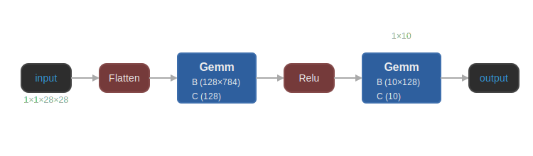

Back to AI Basics: Vanilla MLP on MNIST
Date Created: May 15, 2025
Date Modified:
Introduction
So my hope with this blog in particular is for you to come away with how the model's architecture works and understand what it means when people talking about Neural Networks. It should not be intimidating at all.
Okay, so remember what I said about how our brains can do things effortlessly? Let's picture this.
A bunch of sloppy digits written and rendered at a low resolution of just 28x28 pixels.
But our brains can easily recognize them, no trouble at all (appreciate it, brain). Different handwriting style, different thickness, different slant, different size, different color, different background. Our brains can still associate this 7 or that 7 with the digit 7.
Is teaching a computer to do the same thing as easy as it is for us? Not quite.
This is a classic example, and there are many others like this from easy to hard, which you can found at the bottom of this blog. I also have a notebook for it. You can click on the button at the top, download the code that does this, and play around with it if you want.
While more modern architectures can do a much better job at this, this one is a good starting point to know how it works and what it is doing with no background knowledge.
What is an MLP?
An MLP (Multi-Layer Perceptron) is a type of neural network that consists of multiple layers of neurons. You can call it a "vanilla" MLP because it is the most basic type of them all.
In case you missed it, I talked in short about what a neuron is. A neuron holds a weight and a bias, and it takes an input and produces an output.
At the moment, all of our neurons are fully connected, meaning that every neuron in one layer is connected to every neuron in the next layer.
Our digit images are 28x28 pixels, which means that each image has 784 pixels. Each pixel is a feature, and we can think of each image as a vector of 784 features. Likewise, our first layer of the MLP will have 784 neurons.
Each neuron in the first layer will take one of the 784 pixels as input and produce an output. The output of each neuron in the first layer will be passed to the next layer, and so on.
The last layer of the MLP will have 10 neurons, one for each digit (0-9). The output of each neuron in the last layer will be a probability from 0 to 1, representing the likelihood that the input image belongs to that digit. The neuron with the highest probability will be the predicted digit.
Here's a simple ASCII Art Diagram (thanks Claude):
Input Layer Hidden Layer Output Layer
(784 neurons) (128 neurons) (10 neurons)
[Image] O O (0)
28×28 O O (1)
| O O (2)
v O O (3)
O O O (4)
O -------→ O -------→ O (5)
O O O (6)
O O O (7)
O O O (8)
: : O (9)
Flattened ReLU Activation Softmax
Input Output
W: 128×784 W: 10×128
b: 128 b: 10
I have one hidden layer with 128 neurons, but you can have as many hidden layers as you want, as many neurons as you want. In practice, there's a lot of room for experimentation.
For our 784→128→10 architecture, we have 784×128 + 128×10 = 100,352 parameters just for a small 28×28 image!
Why "Hidden" Layer?
If the neurons in the first layer are taking the input image and producing an output, and the neurons in the last layer are producing the final output, what are the neurons in the middle doing?
For fun? For the sake of innovation?
Of course not.
The neurons in the middle are doing the heavy lifting.
Without hidden layers, a neural network is just a linear model (like logistic regression). A linear model can only learn linear relationships between the input and output. This means that it can only learn to separate the input space into two regions with a straight line (or hyperplane in higher dimensions).
The XOR problem is a classic example of a problem that cannot be solved with a linear model. A network without hidden layers cannot solve this, but one with even a single hidden layer can.
Benefits of Hidden Layers
Hidden layers are crucial in neural networks for several fundamental reasons:
- Non-linear Function Approximation: Hidden layers with non-linear activations (like ReLU) allow the network to learn complex, non-linear relationships in data.
- Feature Extraction: The hidden layers automatically learn useful features from raw input data. Early hidden layers might detect edges and simple patterns, while deeper layers combine these to recognize more complex shapes (like the digit classification we're doing).
- Representation Learning: They transform the input space into new representations where classification becomes easier. They essentially create a new feature space where data points from different classes become more separable.
- Hierarchical Pattern Recognition: Each hidden layer builds upon the previous one, forming a hierarchy of increasingly abstract representations.
As for why they are called "hidden," I guess it is what people call them in the early days of neural networks. I also found people called them that since they are not visible to the outside world, and they are not part of the input or output.
So in short, hidden layers are the backbone of neural networks. They allow the network to learn complex, non-linear relationships in data and automatically extract useful features from raw input data. The math underneath is more complicated that this, but I write them in more details on my GitHub repository or my first page of this series.
For the result, training completed in 63.94 seconds with a final accuracy of 97.66% on the test set. So it is just a literal minute.
Epoch [1/5], Train Loss: 0.2858, Train Accuracy: 91.70%, Test Accuracy: 95.62%
Epoch [2/5], Train Loss: 0.1252, Train Accuracy: 96.31%, Test Accuracy: 96.75%
Epoch [3/5], Train Loss: 0.0864, Train Accuracy: 97.36%, Test Accuracy: 96.80%
Epoch [4/5], Train Loss: 0.0668, Train Accuracy: 97.94%, Test Accuracy: 97.48%
Epoch [5/5], Train Loss: 0.0515, Train Accuracy: 98.39%, Test Accuracy: 97.66%
Training completed in 63.94 seconds
The Neural Network is just a Function
I will retrace my words and say it again.
Despite all the biological terminology, a neuron in a neural network is just a mathematical function, act as a building block.
And a neural network, despite its biological inspiration and complex architecture, is fundamentally just a big mathematical function that transforms a set of input numbers into a set of output numbers through a complex, tangled process of weighted combinations and non-linear transformations.
For me, I found it reassuring in 2 ways:
- It demystifies the whole thing. It is just a function, and we can understand it.
- It can be complicated, and that's good. It means we can be more creative with it to solve bigger problems, which of course, we have already been so far into this.
What's next?
Next up is the Convolutional Neural Networks, or CNNs and how it can solve the spatial structure of the image problem.
In case you wondering why the MLPs lead to CNNs, I have a little explanation for you.
Why MLPs Lead to CNNs
In general, MLPs are flexible and can be used generally to learn a mapping from inputs to outputs. If time is at your disposal, you can use, try, and modify them for any task. But that also guarantees that they are not the best for any task.
When we flatten a 28×28 MNIST image into a 784-dimensional vector, we destroy the spatial structure of the image.
The MLPs does not regard for adjacency of pixels, and it treats each pixel as an independent feature. This is not the best way to learn from images, as it ignores the fact that pixels that are close together in an image are likely to be related.
And for tasks like image recognition, spatial relationships between features (edges, textures, shapes) are crucial.
Convolutional Neural Networks (CNNs) were designed to map image data to an output variable. They have become the go-to approach for prediction problems where image data is used as input, due to their outstanding effectiveness. You can read more about CNNs here, from Jason Brownlee's blog. Or or discover what type of work MLP, CNN, and RNN are used on.
This Youtube video is my main inspiration for this blog. A notebook that introduces neural network and deep learning is also worth a look.